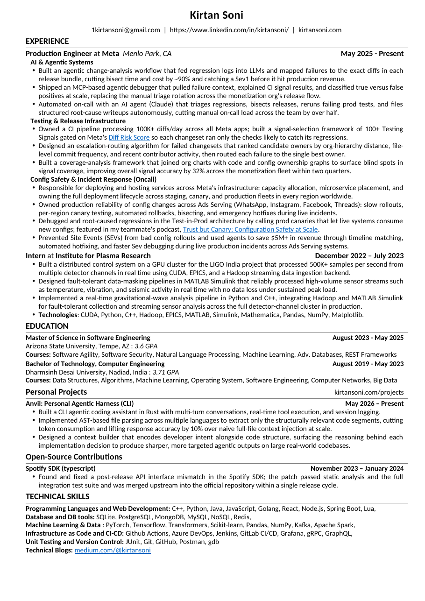
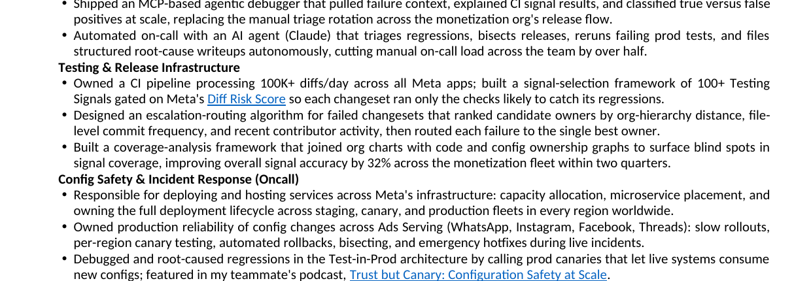

A résumé that compiles
Treating a one-page résumé like a software artifact: content as data, layout as code, a renderer, and a linter that measures how well every line is used. Built iteratively with a render → screenshot feedback loop.
The premise
A résumé is usually a fragile Word document you nudge by hand until it looks right. I wanted the opposite: a source of truth in data, a deterministic renderer, and an automated check that the output is actually good — the same way you'd treat any small program. The result is a pipeline where the content lives in JSON, a Python script renders it to a pixel-faithful PDF, and a custom linter scores how much of every line the text actually fills.

1 · Forensics on the original
It started from a 1.2 MB .docx. The first job was understanding how it was
built. The file was a ZIP of XML, and the metadata told a story: created in Word, run
through a 3-Heights PDF tool, with four weights of Carlito (a Calibri clone)
embedded.The embedded fonts are nearly all of that 1.2 MB. The actual words on a one-page résumé barely register. In other words, it was a PDF that had been converted back into a DOCX.
That diagnosis mattered. A reconstructed DOCX has no real structure — no tables, just
54 paragraphs positioned with tabs and runs of manual spaces, plus converter noise like
explicit strike=0 toggles on every run and words split mid-token
("Post"+"g"+"reS"+"QL").
2 · Content as data (in Markdown)
Content and layout are separated. Everything a human edits lives in resume.json;
all positioning lives in build_resume.py. The early version encoded bold/italic/links
as nested arrays — ugly and hard to write. So inline formatting became Markdown, parsed
by the renderer.
{ "header": "**Production Engineer** at **Meta** *Menlo Park, CA*",
"date": "May 2025 - Present",
"bullets": [
"Owned a CI pipeline processing 100K+ diffs/day ... gated on Meta's
[Diff Risk Score](https://engineering.fb.com/...) so each changeset ran
only the checks likely to catch its regressions."
] }**bold**,
*italic*, [text](url) become real docx runs and hyperlinks.
It's diff-friendly, trivial for a human or an LLM to write, and keeps the JSON flat.
3 · The render pipeline & the screenshot loop
The renderer uses python-docx. To see the result, the document is converted
with headless LibreOffice and rasterized — so every change can be inspected visually, not just
asserted in code.
One command (./build.sh) runs the whole chain. The PNG is the feedback signal:
catch a left-aligned title, a two-page spill, or a stray underline by looking, then fix the data
and re-run.
4 · The interesting part: a line-utilization linter
A bullet with five words stranded on its own line wastes space. I wanted a number for it: 100% = the line is full, 0% = blank. And a rule — never split a bullet to fix it; if it wraps to two lines, report both lines so the wording can be adjusted.
The naïve approach is "average character width." That's wrong — proportional fonts vary widely.In Carlito a "W" is roughly three times the width of an "i". An average tells you nothing about either.
Instead the linter reads Carlito's real per-glyph advance widths from the embedded TTF,
sums them, and greedily wraps words exactly the way Word/LibreOffice does. Utilization is then
natural_text_width / available_width.
pdftotext -layout of the rendered PDF and sweeping until the model's predicted
line breaks match. Final fit: bullets 18/18, full-width lines 10/10. This is the
"screenshot loop" done precisely — exact wrap points instead of counting pixels.
A spot-check against the renderer's own word coordinates confirmed the model is accurate to within a percentage point:
| Last line | Rendered (actual) | Linter predicted |
|---|---|---|
| "autonomously." | 13% | 12% |
| "catch regressions given its risk profile." | 31% | 30% |
| the "Trust but Canary" line | 80% | 81% |
5 · Using the linter to optimize
With a trustworthy number, rewriting bullets becomes a loop instead of guesswork: write a draft, read its last-line utilization, add a concrete detail or trim to one line, repeat. The verdict keys on the last line — earlier lines justify to 100% in the render, so only the trailing line can waste space.
[FAIL] AI & Agentic Systems > bullet 3 util=[94% 12%] "...autonomously."
[FAIL] Testing & Release Infra > bullet 1 util=[98% 97% 30%]
[FAIL] Open-Source > Spotify SDK > bullet 1 util=[99% 10%]
# after — every last line now 82–100% full, still one page
[PASS] AI & Agentic Systems > bullet 3 util=[96% 83%]
[PASS] Testing & Release Infra > bullet 1 util=[97% 88%]
[PASS] Open-Source > Spotify SDK > bullet 1 util=[97% 83%]

6 · From one résumé to a directory of them
One résumé became a reusable Claude Code skill. The insight: you apply to many jobs, but you shouldn't rebuild from scratch each time. The skill keeps a directory of versions, each tagged with the job it was used for, and exposes three flows:
| Flow | What it does |
|---|---|
| match | Triages saved résumés against a job posting, scores each on experience / projects / technologies relevance, returns a ranked recommendation. |
| create | Tailors a new draft from the closest match, renders + lints it, and leaves it in a temp area — nothing is committed yet. |
| save | Only on confirmation, promotes the draft into the store and records the job it was applied with. |
0.6·experience +
0.3·projects + 0.1·technologies. Experience dominates; the tech stack is the lightest
signal (its absence rarely disqualifies). Weights live in a config file, so they're tunable.
What it adds up to
The throughline is treating a document like code: a single data source, a deterministic build, a visual feedback loop, and an objective quality gate. The line-utilization linter is the part I'm most happy with — it turns a vague "this looks empty" into a calibrated number that's accurate to the renderer within a point, and that number is what makes automated rewriting and résumé-matching trustworthy.
Layout:
resume.json (content) ·
build_resume.py (renderer + Markdown parser) ·
validator/ (line-utilization linter + calibration) ·
build.sh (the render→screenshot loop) ·
~/.claude/skills/resume-directory/ (the match/create/save skill).